自动生成的 GitHub 统计卡片，可直接在 README 中使用。

<img src="https://sheyiyuan.github.io/github-readme-stats/github-stats.svg" alt="Github Stats">


<img src="https://sheyiyuan.github.io/github-readme-stats/top-langs.svg" alt="Top Langs">

<img src="https://sheyiyuan.github.io/github-readme-stats/half-beat-player.svg" alt="Half Beat Player">

<img src="https://sheyiyuan.github.io/github-readme-stats/tuan-chat-web.svg" alt="Tuan Chat Web">

<img src="https://sheyiyuan.github.io/github-readme-stats/anan-s-sketchbook-chat-box.svg" alt="Anan S Sketchbook Chat Box">

<img src="https://sheyiyuan.github.io/github-readme-stats/shyerimeme.svg" alt="Shyerimeme">